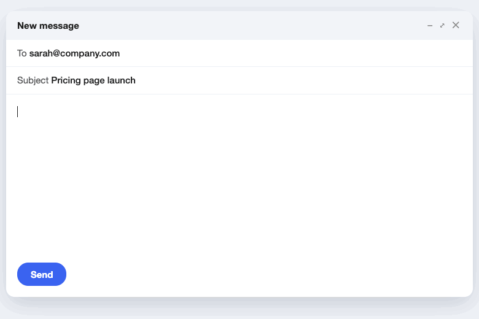
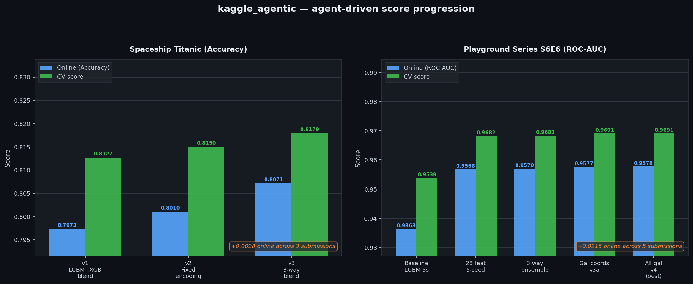
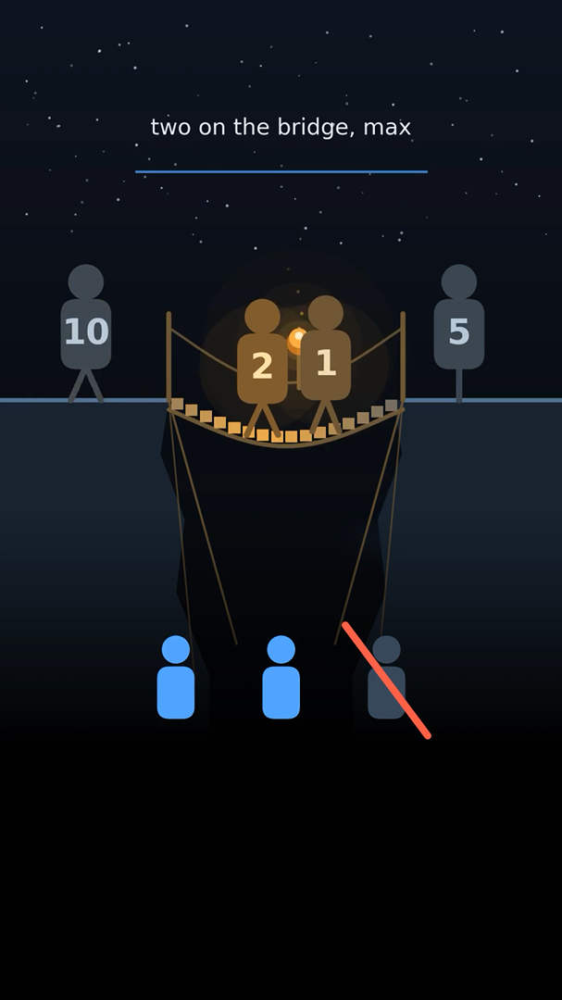

Learning without backprop, computing without clocks.
I'm Gaspard. My research is on predictive coding, a brain-inspired way for networks to learn with purely local updates. I'm also fascinated by networks made of logic gates and by analog circuits that let physics do the maths. On the side, I build AI products that run by themselves.
Three ideas, explained with moving pictures.
Each page is a short, hands-on explainer: drag, train and poke the models yourself.
Predictive coding
Every layer predicts the one below, and learning means shrinking the surprise. I explain it with an "energy machine" of springs you can play with.
02 — Efficient AILogic gate networks
Neural networks whose neurons are AND, OR and XOR gates. Train a tiny one in your browser, then freeze it into a circuit that runs at the speed of logic.
03 — Physical computingAnalog circuits for ML
What if the hardware solved the equations by settling into them? A capacitor, a resistor and two amplifiers can do predictive-coding inference.
For fun: AI products that run themselves.
Side projects, all built on Claude: they replace paid tools, run whole data-science projects, or publish content every night.
AI Stack
A Grammarly-style writing assistant and a Granola-style meeting notetaker, running on the Claude plan you already have.

AI for data science
An orchestrator that runs Kaggle competitions on its own: it forms hypotheses, spawns specialist agents, validates and submits.

Have you seen my quant
Quant interview puzzles written, animated, narrated and posted every night with no human in the loop. Millions of views so far.
